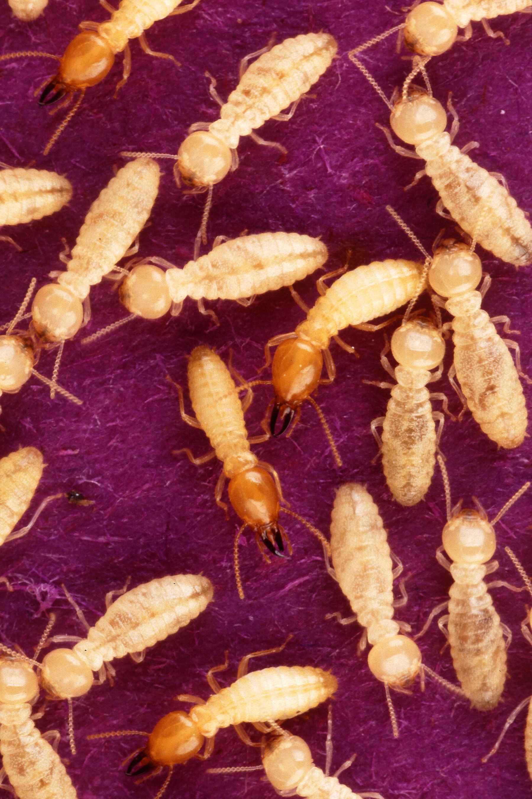

Crowdsourcing gene predictions & estimating population sizes
Bruno Vieira | @bmpvieira


Bioinformatics & Population Genomics
Initially address two issues
Scaling up gene prediction
Infer the efective population size history in insects with the PSMC method (Li, 2011).
Gene prediction?
Why is this important?
Genes are the basic building block of organisms
How?
Gene prediction models (Sleator, 2010)
Web application to crowdsource gene prediction
Crowdsource?
Crowd + Outsource

Citizen Science
James Borrell | @James_Borrell
Citizen Cyberscience Summit 2014 | #ccs14
Self-reward helping Science
Zooniverse success

Science? I don't care...

Cognitive surplus
Gamification
Gamification
A way to engage users into solving a problem by adding game mechanics to it
Useless game - Flappy bird
50 milion downloads | $50 000 per day

Useful - Genes In Space
Previous work
Scale up and Gamify another Open Source project
 Anurag Priyam | @yeban
Anurag Priyam | @yeban
Current work
Scale up
Move most of the logic to the browser

Scale up
Biology logic on the browser
Gamification
Dashboad mockup

Machine Learning
Use data generated by users to improve gene prediction models

Robert Simpson | @orbitingfrog
Citizen Cyberscience Summit 2014 | #ccs14
PSMC
Effective population size?
Theoretical number of individuals that contribute gametes to the next generation
Why is this important?
Measure of genetic diversity
Affects selection efficiency
Used
Effect of historical climate changes (Miller, 2012)

Measure the impact of anthropogenic activity(Zhao, 2013)

Discover unexpected population bottlenecks (Freedman, 2014)
Detect the time of divergence between populations (Li, 2011)
How to measure?
Previously hard to do
- Highly stochastic nature of inbreeding and genetic drift
- Other confounding factors
Now from a diploid genome
PSMC

Hasn't been used in insects a lot... until now!

Use PSMC to answer some evolutionary questions
Is the effective population size in solitary insects > social?
Experimental design
Run PSMC across a wide range of insects that evolved eusociality.




Effective population size in multi queen ant colonies > single?
Experimental design
Run PSMC on many ant genomes, perhaps more than the seven genomes currently sequenced and publicly available
- Jerdon's jumping ant, Harpegnathos saltator (Bonasio, 2010)
- Florida carpenter ant, Camponotus floridanus (Bonasio, 2010)
- Argentine ant, Linepithema humile (Smith, 2011)
- Fire ant, Solenopsis invicta (Wurm, 2011)
- Two leafcutter ants, Atta cephalotes (Suen, 2011) and Acromyrmex echinatior (Nygaard, 2011);
- Red harvester ant, Pogonomyrmex barbatus (Smith, 2011).
Current work
Reproducing published results to master PSMC

Thank you!
 Bruno Vieira | @bmpvieira
Bruno Vieira | @bmpvieira
Anurag Priyam | @yeban
 Yannick Wurm | @yannick__
Yannick Wurm | @yannick__
© 2014 Bruno Vieira CC-BY 4.0
- Address data "deluge" in gene prediction
- Scale up by moving logics to browser
- Gamify to tap into Cognitive Surplus
- Master PSMC by reproducing results
- Effective pop. size solitary insects > social?
- Eff. pop. size multi queen ants > single?
Gmail, Facebook, etc.

Gamification
Dashboard HTML5 (incomplete)

Afra Stack
Gamify
- Scores
- Open Badges
- Certificates of Expertise
PSMC
Pairwise Sequentially Markovian Coalescent¹ method on insect genomes for inference of the population size history
¹ Li, H., & Durbin, R. (2011). Inference of human population history from individual whole-genome sequences. Nature, 475 (7357), 493–6. doi:10.1038/nature10231
Theory
"The PSMC infers the local time to the most recent common ancestor (TMRCA) on the basis of the local density of heterozygotes, using a hidden Markov model"
H. Li & Durbin, 2011